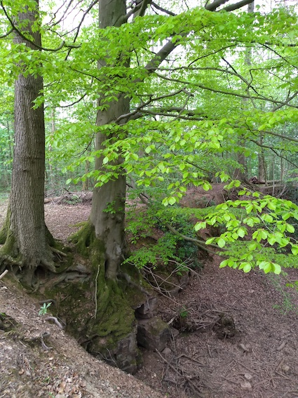

A trip to
the woods

There are so many things to do or look for in
a wood that the suggestions here are just a start. Deciduous
or mixed woodland is the most interesting - dense, dark
plantations of conifers are best avoided. If you have a nearby
woodland, it is well worth visiting several times during the
year, since you will see different things. For example, wild
flowers are most abundant in woods in the early spring, before
the tree canopy develops to shut out much of the light. The
cool shade of a wood can be very welcome on a hot summer's
day. Autumn is the time for seeds, fungi and colourful leaves.
Some ideas are listed below and you can find others in our Adopt a tree activity.
- One of the most enjoyable activities
for children in woodland is a scavenger hunt. It
is best if you can visit the wood in advance and make up a
list of items they might be able to find there. For
example: a leaf as big as a hand, prickly leaf, hairy
leaf, partly eaten leaf, cone, berry, feather, acorn,
white flower, flat stone, seed pod, twig shaped like an
"r", etc. Each child then gets a copy of the list and they
set out with a bag or backpack to see how many they can
collect before you call time.
- What are the main types of tree in the
wood? You can use the
A-Z guide to British trees from the Woodland Trust
to identify them. Do the most common trees differ between
the middle and edge of the wood? If so, can you think why
this might be?
- Take
bark rubbings from different types of tree, using a
thick wax crayon used side-on and paper which does not
tear easily. Compare the bark pattern from different tree
types. These rubbings can be trimmed down and stuck in a Nature Journal labelled
with the tree type.
- If you can visit the wood regularly
then it is interesting to note the changes in the
different tree species through the year. Which trees are
the first to produce leaves, and when does this happen?
Which trees have flowers and which have catkins? What sort
of seeds and fruits do the different trees produce? Take a
few home and plant them in a pot outdoors to see if they
germinate. If they do, they could be grown on in a shallow
pot as a sort of bonsai. Which trees have the most
colourful leaves in the autumn? When do most of them fall?
Does this vary much between different types of tree? This
is all excellent material for a Nature Journal.
- The age of a tree
can be roughly estimated from the circumference of the
main trunk. A rule of thumb is one year of age for every
2.5 cm of girth. Of course this rule varies with the
type of the tree. A calculator which allows for this can
be found here.
Who can find the tree in the wood with the thickest
trunk? Use a tape measure or string to measure its
circumference and then work out its age.
- Use a magnifying glass to study
"minibeasts" living on the trees or in the leaf litter
underneath. A pale coloured pot or tray and a paintbrush
will be useful to allow creatures to be gently separated
from leaves or bark and studied. The Woodland Trust has
some useful guides here
which may help you to identify some of the creatures you
find.
- What birds can you see in the woods? It
is often much easier to hear them than to see them -
binoculars may help. The Woodland Trust is also a good
source for identifying
woodland birds.
- In the autumn, you can go on a fungus
hunt. Some grow on trees, especially old ones, some are
found on the ground. Fallen logs are an especially rich
source of fungi, which speed the process of decay. Of
course some fungi are very poisonous, so you will want to
emphasize that they should not be touched. Here
is a useful identification guide.
- Finally, there are many games which can
be played in woods. Hide and seek is an obvious one. In
addition to the basic game, many variants are possible. Here
is a description of some of them. Another fun activity for
kids is to
build a den, using fallen branches and other natural
woodland materials.